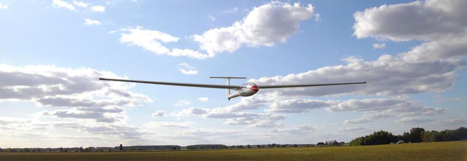

Уже несколько лет я с огромным удовольствием занимаюсь планерным спортом.
Планер - это самолет без мотора. Его поднимает в воздух самолет-буксировщик. На высоте около 600 метров планерист отцепляется от буксировщика и продолжает свой полет самостоятельно. Планер набирает высоту в восходящих потоках воздуха.
Используя восходящие потоки, планерист пролетает маршруты 100 км и более. Опытные спортсмены проходят маршруты более 500 км.
Если не хватает высоты для того, чтобы долететь до аэродрома, планерист совершает посадку на подобранную площадку. После этого за ним прилетает самолет-буксировщик либо приезжает автомобиль со специальным прицепом и доставляет на аэродром.
⇐ Вернуться на главную